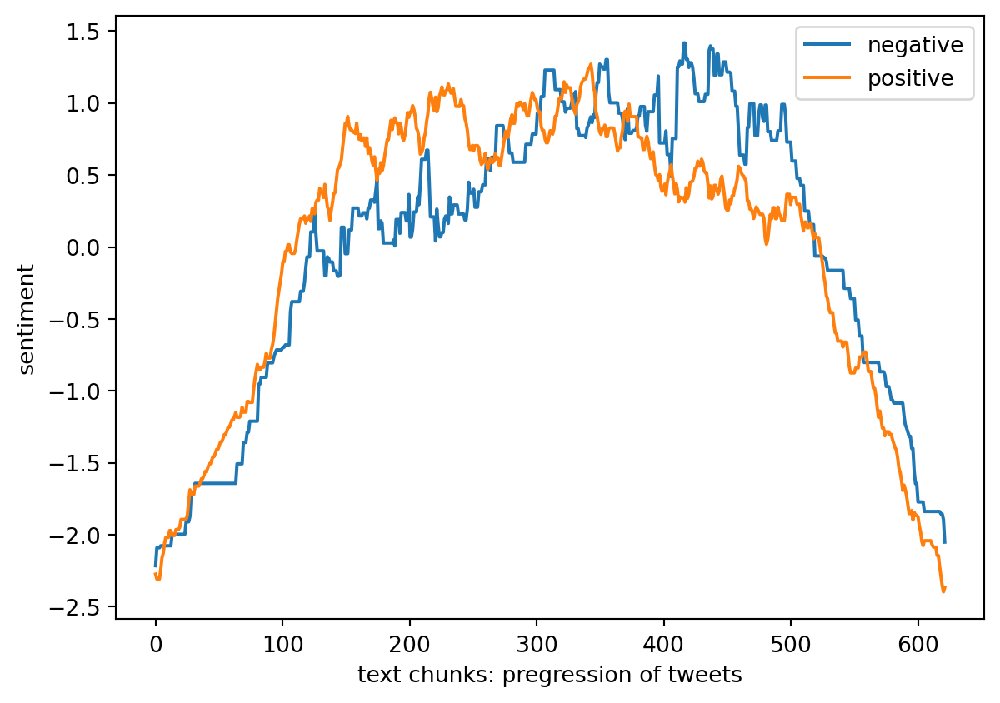
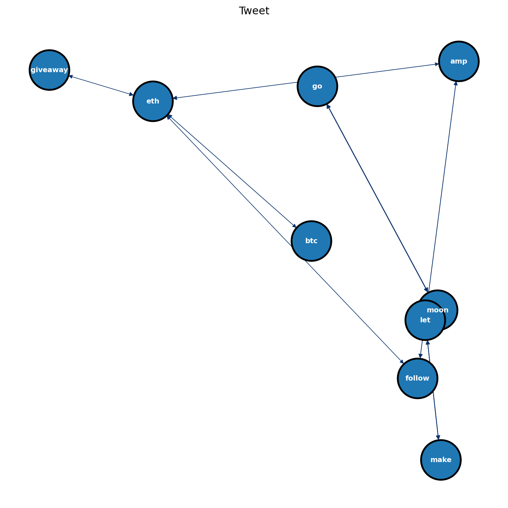

The ARM Method for Twitter API Text Data
Picture from https://www.exchange4media.com/
Methods
What is ARM(Association Rule Mining)? How does it work?
Association Rule Mining was initially motivated by the problem of Basket Analysis, which aims to discover the association rules between customers’ purchases of different products. “Basket Analysis” is a common scenario in real life. Data scientists or data analysts in this scenario can discover the association between products and goods from consumer transaction records, and then bring more sales through product bundling or related recommendations. The key to Association Rule Mining is to allow people to discover more relationships between items through algorithms.
Association rules reflect the dependency and association between an item and other items. People have actually applied ARM in many fields. In physical stores, such as Walmart, Target, Game Stop, etc., association rules are used to discover a database of customers’ purchase history and eventually discover the common relationships inherent in the purchasing habits of a group of customers. When buying one or a specific product, they also buy other specific products. The merchants of physical stores can adjust the variety, quantity, and shelf layout of products from the result of association rule mining to make customers buy more products to increase sales and net profit.
Association rule mining can also be applied to online shopping scenarios. For example, in September 2022, Nintendo released a video game: Splatoon 3, which was bundled with the Nintendo switch. Sony released God of War Ragnarok in November, and Playstation 5 was also bundled with this latest game. Insurance companies can also use ARM to analyze different cases to provide more combinations of different insurance items. For example, if obesity and diabetes are related, Insurance companies can increase the percentage of benefits and reduce the deductible required to treat the two diseases in the policy.
Step 1: Import necessary packages
Code
import nltk
import string
from nltk.stem import WordNetLemmatizer
from nltk.stem import PorterStemmer
from nltk.corpus import stopwords
from nltk.tokenize import word_tokenize
from nltk.sentiment import SentimentIntensityAnalyzer
import os
import matplotlib.pyplot as plt
import numpy as np
import pandas as pd
from apyori import apriori
import networkx as nx Step 2: Preprocessing data
Code
#USER PARAM
input_path = '../../data/01-modified-data/twitter_text_data.csv'
compute_sentiment = True
sentiment = [] #average sentiment of each chunck of text
ave_window_size = 250 #size of scanning window for moving average
#OUTPUT FILE
output='transactions.txt'
if os.path.exists(output): os.remove(output)
#INITIALIZE
lemmatizer = WordNetLemmatizer()
ps = PorterStemmer()
sia = SentimentIntensityAnalyzer()
#ADD MORE
stopwords = stopwords.words('english')
add=['mr','mrs','wa','dr','said','back','could','one','looked','like','know','around','dont', 'rt','', '1']
for sp in add: stopwords.append(sp)
def read_and_clean(path,START=0,STOP=-1):
global sentiment
#-----------------------
#INSERT CODE TO READ IN AS ONE BIG STING
file = open(path, 'rt', encoding= 'utf-8')
text = file.read().lower()
file.close()
#-----------------------
#REMOVE HEADER, AND NEW LINES
text=text.replace("'",'') #wasn't --> wasnt
lines = text.splitlines(); text='';
lines=lines[START:STOP] # mystring.replace('\n', ' ')
for line in lines: text=text+' '+line
#-----------------------
#INSERT CODE TO ONLY KEEP CHAR IN string.printable
tmp = ''
printable = set(string.printable)
for char in text:
if (char in printable ):
tmp = tmp + char
text = tmp
#-----------------------
#BREAK INTO CHUNKS (SENTANCES OR OTHERWISE)
sentences=nltk.tokenize.sent_tokenize(text) #SENTENCES
print("NUMBER OF SENTENCES FOUND:",len(sentences)); #print(sentences)
#CLEAN AND LEMMATIZE
keep='0123456789abcdefghijklmnopqrstuvwxy';
new_sentences=[]; vocabulary=[]
for sentence in sentences:
new_sentence=''
# REBUILD LEMITIZED SENTENCE
for word in sentence.split():
#ONLY KEEP CHAR IN "keep"
tmp2=''
for char in word:
if(char in keep):
tmp2=tmp2+char
else:
tmp2=tmp2+' '
word=tmp2
#-----------------------
# INSERT CODE TO LEMMATIZE THE WORDS
new_word = lemmatizer.lemmatize(word)
#-----------------------
#REMOVE WHITE SPACES
new_word=new_word.replace(' ', '')
#BUILD NEW SENTANCE BACK UP
if( new_word not in stopwords):
if(new_sentence==''):
new_sentence=new_word
else:
new_sentence=new_sentence+','+new_word
if(new_word not in vocabulary): vocabulary.append(new_word)
#SAVE (LIST OF LISTS)
new_sentences.append(new_sentence.split(","))
#SIA
if(compute_sentiment):
#-----------------------
# INSERT CODE TO USE NLTK TO DO SENTIMENT ANALYSIS
new_text= new_sentence.replace(',',' ')
sentiment_level = sia.polarity_scores(new_text)
sentiment.append([sentiment_level['neg'],sentiment_level['neu'],sentiment_level['pos'],sentiment_level['compound']])
#-----------------------
#SAVE SENTANCE TO OUTPUT FILE
if(len(new_sentence.split(','))>2):
f = open(output, "a")
f.write(new_sentence+"\n")
f.close()
sentiment=np.array(sentiment)
print("TOTAL AVERAGE SENTEMENT:",np.mean(sentiment,axis=0))
print("VOCAB LENGTH",len(vocabulary))
return new_sentences
transactions=read_and_clean(input_path,400,-400)
print(transactions[0:5])NUMBER OF SENTENCES FOUND: 621TOTAL AVERAGE SENTEMENT: [0.04147504 0.80044122 0.15648148 0.2132087 ]
VOCAB LENGTH 3616
[['enter', 'follow', 'bellycatsnft', 'monsterinhype', 'moonkillersnft', 'stussyjimin', 'park', 'tailor', 'chaos', 'jimin', 'coming', 'httpstcotc2yppqs', 'mutagensamurai', 'art', 'dead', '008eth', 'reserve', 'piece', 'decline', 'culture', 'modern', 'civilisation'], ['using', 'combination', 'good', 'drop', 'project', 'bjbaumann2014', 'monsterrafo', 'cdoug34', 'wild3eth', 'okaybroomer', 'precious7674', 'itsmijj', 'httpstcod3o88maudc', 'exterminatorgg', 'let', 'get', 'rid', 'animal', 'make', 'mess'], ['ape', 'go', 'moon'], ['exterminator', 'coming'], ['yfiusdt', 'yfi', 'signal', '2', 'last', 'signal', '109', 'min', 'ago', '847600000000', '855500000000', '093', 'volume', 'httpstconese5db5i', 'robinneth', 'robin', 'opentigers', 'giveaway', 'openw', 'nft', 'marketplace', 'first', 'nft', 'creation', 'join', 'purchase', 'opentiger', 'ethw', 'chai', 'new', 'ens', 'domain', 'registration', 'valieth', 'xuebaochaieth', '00069eth', 'dumbelbeeeth', 'coindogface', '390', 'xrp', '10', 'people', 'enter', 'follow', 'coindogfacenfts', '2', '3', 'tag', '3', 'friend', '48', 'h', 'eth', 'nftg', 'dasfruits', 'bluff', 'x', 'oxya', 'origin', '5', 'landlist', 'giveaway', 'landlisted', 'double', 'chance', 'earn', '3', 'eth', 'mint', 'enter', 'yukheenft', 'monstermong', 'ha', 'invaded', 'babymong', 'babymong', 'need', 'peace', 'babymong', '00035', 'eth', 'polygon', 'httpstcoed9y4tplep', 'ope', 'clonex', '5891', 'sold', 'looksrare', 'value', '1449', 'eth', 'price', '18751', 'usd', 'view', 'httpstcopostwyvthn', 'deltatradinghub', 'btc', 'see', 'reversal', 'crypto']]Text data needs to be pre-processed if people want to use Association Rule Mining for analysis of this type of data. We need to convert the text data into Transaction data because the data contains many meaningless letters or words, such as ‘rt’, ‘1’, etc.
After cleaning the text, the tweets were divided into a total of 621 sentences. commas were replaced with spaces and the NLTK package was introduced to analyze the text for the sentiment. NLTK identifies text and classifies these data into three sentiments: negative, neutral, and positive. Classify each text by first creating a Sentiment Intensity Analyzer (SIA) and then use polarity_scores to represent the four sentiment values of each tweet. Appending each sentiment dictionary to the result list converts it to an index. Index consists of four columns from the sentiment score: Neu, Neg, Pos and compound. The first three represent the percentage of sentiment scores for each category in the header, and compound is the sum of positive, negative & neutral scores. compound was calculated to be equal to 0.21202592. In general, texts between compound 0.2 and -0.2 were considered neutral. After processing the data, the TOTAL AVERAGE SENTIMENT: [negative: 0.04147504, neutral:0.80044122, positive: 0.15648148, compound:0.2132087 ]. The first five of all remaining tweets are shown in the output above.
Step 3: Plot: Overall Average Tweets Attitude
Code
def moving_ave(y,w=100):
#-----------------------
# INSERT CODE TO COMPUTE THE MOVING AVERAGE OF A SIGNAL Y
m_a = np.ones((1,w))/w
m_a = m_a[0,:]
return np.convolve(y, m_a, 'same')
#-----------------------
# INSERT CODE TO VISUALIZE THE SENTIMENT ANALYSIS AS A TIME-SERIES (SEE PLOT FOR AN EXAMPLE)
if(compute_sentiment):
neg = moving_ave(sentiment[:,0], ave_window_size)
neg = (neg-np.mean(neg))/np.std(neg)
nue = moving_ave(sentiment[:,1], ave_window_size)
nue = (nue-np.mean(nue))/np.std(nue)
compound = moving_ave(sentiment[:,2], ave_window_size)
compound = (compound-np.mean(compound))/np.std(compound)
pos = moving_ave(sentiment[:,3], ave_window_size)
pos = (pos-np.mean(pos))/np.std(pos)
index = np.linspace(0, len(sentiment), len(sentiment))
plt.plot(index, neg, label = 'negative')
plt.plot(index, pos, label = 'positive')
plt.legend(loc = 'upper right')
plt.xlabel('text chunks: pregression of tweets')
plt.ylabel('sentiment')
plt.show
I set the average window size to 250. By creating an equation for the moving average and calculating it, we can obtain Figure 1. Figure 1 represents the overall attitude scores of all the remaining tweets.
Step 4: Define a function to reformat the result output
Code
# Re-format output
def reformat_results(results):
#CLEAN-UP RESULTS
keep=[]
for i in range(0,len(results)):
for j in range(0,len(list(results[i]))):
# print(results)
if(j>1):
for k in range(0,len(list(results[i][j]))):
if(len(results[i][j][k][0])!=0):
rhs=list(results[i][j][k][0])
lhs=list(results[i][j][k][1])
conf=float(results[i][j][k][2])
lift=float(results[i][j][k][3])
keep.append([rhs,lhs,supp,conf,supp*conf,lift])
if(j==1):
supp=results[i][j]
return pd.DataFrame(keep, columns =["rhs","lhs","supp","conf","supp x conf","lift"])Step 5: Define a function to convert result to network
Code
def convert_to_network(df):
print(df)
#BUILD GRAPH
G = nx.DiGraph() # DIRECTED
for row in df.iterrows():
# for column in df.columns:
lhs="_".join(row[1][0])
rhs="_".join(row[1][1])
conf=row[1][3]; #print(conf)
if(lhs not in G.nodes):
G.add_node(lhs)
if(rhs not in G.nodes):
G.add_node(rhs)
edge=(lhs,rhs)
if edge not in G.edges:
G.add_edge(lhs, rhs, weight=conf)
# print(G.nodes)
# print(G.edges)
return GStep 6: Define a function to plot network
Code
def plot_network(G):
#SPECIFIY X-Y POSITIONS FOR PLOTTING
pos=nx.random_layout(G)
#GENERATE PLOT
fig, ax = plt.subplots()
fig.set_size_inches(10, 10)
#assign colors based on attributes
weights_e = [G[u][v]['weight'] for u,v in G.edges()]
#SAMPLE CMAP FOR COLORS
cmap=plt.cm.get_cmap('Blues')
colors_e = [cmap(G[u][v]['weight']*10) for u,v in G.edges()]
#PLOT
nx.draw(
G,
edgecolors="black",
edge_color=colors_e,
node_size=2000,
linewidths=2,
font_size=8,
font_color="white",
font_weight="bold",
width=weights_e,
with_labels=True,
pos=pos,
ax=ax
)
ax.set(title='Tweet')
plt.show()Step 7: Apply package: apriori and show output
Code
#print(pd.DataFrame(transactions))
transactions_res = list(apriori(transactions,min_support = 0.083, min_confidence = 0, min_length = 1, max_length = 5))
print(len(transactions_res))23Here I used the package apriori and manually set min_support , min_confidence, min_length and max_length. After trying different values several times, min_support = 0.083, min_confidence = 0, min_length = 1, max_length = 5 were chosen. This combination resulted in a more concise and understandable output.
Step 8: plot the network result
Code
# INSERT CODE TO PLOT THE RESULTS AS A NETWORK-X OBJECT
result = reformat_results(transactions_res)
network = convert_to_network(result)
plot_network(network) rhs lhs supp conf supp x conf lift
0 [amp] [eth] 0.083736 0.666667 0.055824 2.287293
1 [eth] [amp] 0.083736 0.287293 0.024057 2.287293
2 [amp] [follow] 0.086957 0.692308 0.060201 4.432197
3 [follow] [amp] 0.086957 0.556701 0.048409 4.432197
4 [btc] [eth] 0.090177 0.674699 0.060842 2.314851
5 [eth] [btc] 0.090177 0.309392 0.027900 2.314851
6 [eth] [follow] 0.098229 0.337017 0.033105 2.157601
7 [follow] [eth] 0.098229 0.628866 0.061773 2.157601
8 [eth] [giveaway] 0.099839 0.342541 0.034199 2.127182
9 [giveaway] [eth] 0.099839 0.620000 0.061900 2.127182
10 [go] [moon] 0.083736 0.962963 0.080635 10.678571
11 [moon] [go] 0.083736 0.928571 0.077755 10.678571
12 [let] [make] 0.083736 0.787879 0.065974 7.413223
13 [make] [let] 0.083736 0.787879 0.065974 7.413223
Results
The code in the upper section provides the final output. There are several values to note here. supp: support stands for the ratio between the number of occurrences of a given combination and the total number of occurrences. lsh is the left-hand side. rhs is the right-hand side. conf is Confidence refers to the probability that the word ‘amp’ will occur when the word ‘eth’ appears in the first row. Lift is the difference between the actual frequency of the situation and the predicted probability that it will occur. If the value of lift is equal to 1, it means that the items on the left-hand side and right-hand side are independent. If the value of lift is greater than 1, it means that the items on the left-hand side and right-hand side are positively related. If the value of lift is less than 1, it means that the items on the left-hand side and right-hand side are negatively related.
Figure 2 shows the relationship between the different keywords that are chosen. The probability of ‘amp’ and ‘btc’ appearing is high when ‘eth’ appears first. Since Bitcoin and Ethereum are the two most popular types of all cryptocurrencies currently, the correlation between the two of them is relatively high even though they are more expensive compared to other cryptocurrencies. The combination of ‘go’ and ‘moon’ together is also very interesting and will be analyzed in the conclusion section.
Conclusion
Although we obtained the initial relationship between tweets keywords by Association Rule Mining, there are a large number of disturbing factors about the tweets of cryptocurrencies. A large number of users send or retweet information about advertising and betting sites. Just as during the 2022 World Cup, sports betting sites will also have a high proportion of tweets on related topics. In the above output, the values of conf for ‘go’ and ‘moon’ are large and the values of lift are large compared to other keywords. By comparing the initial text data, we can find that ‘go moon’ is the tagline of the advertisement. ‘giveaway’ and ‘eth’ also have a similar relationship to the above part. Similar advertising slogans are used to attract users to click on specific links for scamming.